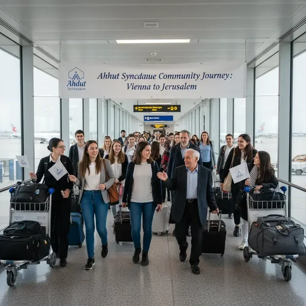
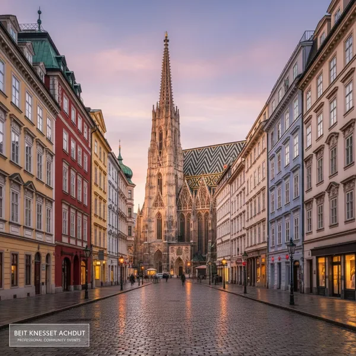
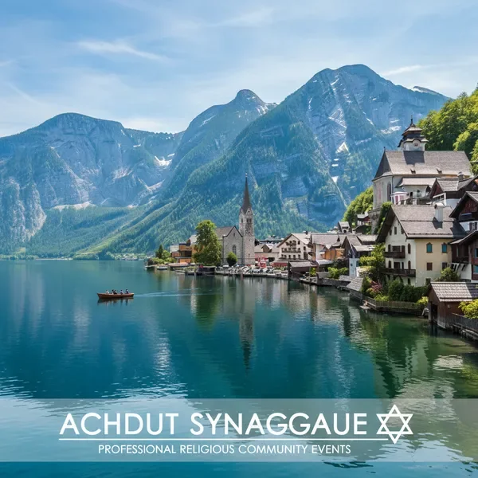

מסלול מפורט - יום אחר יום
יום ראשון - הגעה לוינה
טיסה בבוקר מתל אביב לוינה. הגעה למלון, התארגנות ומנוחה. בערב - ארוחת פתיחה חגיגית במלון עם כל חברי הקבוצה. תדריך על הנסיעה והכרות ראשונית.
- טיסה ישירה מתל אביב (המראה 07:00)
- הגעה לוינה והעברה למלון
- ארוחת ערב חגיגית ותדריך
יום שני - וינה העיר העתיקה
יום מלא של סיורים בוינה ההיסטורית. נבקר במרכז העיר העתיקה, ברחוב הקניות הראשי, בקתדרלת סנט סטפן ובבית האופרה המפורסם. צהריים במסעדה כשרה מקומית.
- סיור מודרך במרכז העיר ההיסטורי
- ביקור בקתדרלה ובית האופרה
- זמן חופשי לקניות ברחוב קרטנר
- ארוחת ערב במסעדה כשרה
יום שלישי - ארמון שנברון והמורשת היהודית

בבוקר נבקר בארמון שנברון המפואר - מעון הקיץ של משפחת הבסבורג. סיור בחדרי הארמון המרהיבים ובגנים המלכותיים. אחר הצהריים נבקר במוזיאון היהודי ובבית הכנסת המרכזי של וינה.
- סיור מודרך בארמון שנברון
- טיול בגנים המלכותיים
- ביקור במוזיאון היהודי של וינה
- תפילת מנחה בבית הכנסת המרכזי
יום רביעי - זלצבורג עיר המוזיקה

נסיעה לזלצבורג, עיר הולדתו של מוצרט. סיור בעיר העתיקה המקסימה, ביקור בבית מוצרט, עליה לטירה הוהנזלצבורג והנוף המרהיב של העיר והרי האלפים. ארוחת צהריים במסעדה כשרה מקומית.
- נסיעה לזלצבורג (כ-3 שעות)
- סיור בעיר העתיקה ובית מוצרט
- עליה לטירה והנוף הפנורמי
- זמן חופשי ברחוב גטריידגאסה
יום חמישי - אגם האלשטט
יום מלא באחד המקומות היפים ביותר באוסטריה - אגם האלשטט. שייט באגם, סיור בכפר האלפיני הציורי, ביקור במכרה המלח ההיסטורי. זמן חופשי ליהנות מהנוף המדהים ולצלם תמונות בלתי נשכחות.
- נסיעה לאגם האלשטט
- שייט באגם הקריסטלי
- סיור בכפר האלפיני המסורתי
- ביקור במכרה המלח (אופציונלי)
יום שישי - אינסברוק והחזרה לוינה
בבוקר נבקר באינסברוק, בירת הטירול. סיור במרכז העיר ההיסטורי, ביקור בגג הזהב המפורסם ובארמון הופבורג. נסיעה חזרה לוינה. הכנות לשבת קודש - קבלת שבת מיוחדת עם כל הקבוצה.
- נסיעה לאינסברוק בבוקר
- סיור בעיר הטירולית
- חזרה לוינה אחר הצהריים
- קבלת שבת קודש במלון
שבת קודש בוינה
שבת מנוחה בוינה. תפילות בבית הכנסת המקומי, סעודות שבת משותפות עם כל הקבוצה, שיעורי תורה ומנוחה. יום מיוחד של חיזוק קהילתי ורוחני.
- תפילת שחרית בבית הכנסת
- סעודות שבת קודש משותפות
- שיעורי תורה ושיחות
- מנוחה ואווירה שבתית
יום ראשון - סיום וחזרה לארץ
ארוחת בוקר אחרונה במלון. זמן חופשי אחרון לקניות מזכרות או סיור עצמאי. העברה לשדה התעופה וטיסה חזרה לישראל. הגעה בערב לתל אביב עם זיכרונות בלתי נשכחים.
- ארוחת בוקר והתארגנות
- זמן חופשי לקניות אחרונות
- העברה לשדה התעופה
- טיסה חזרה לישראל (הגעה בערב)